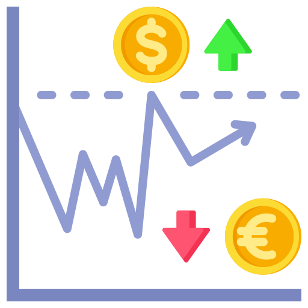
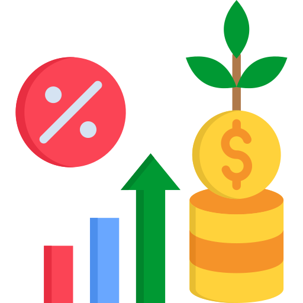
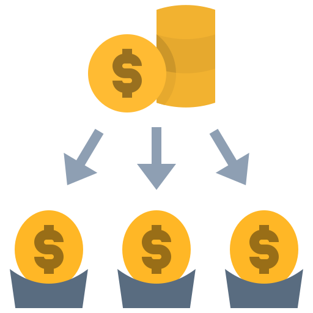
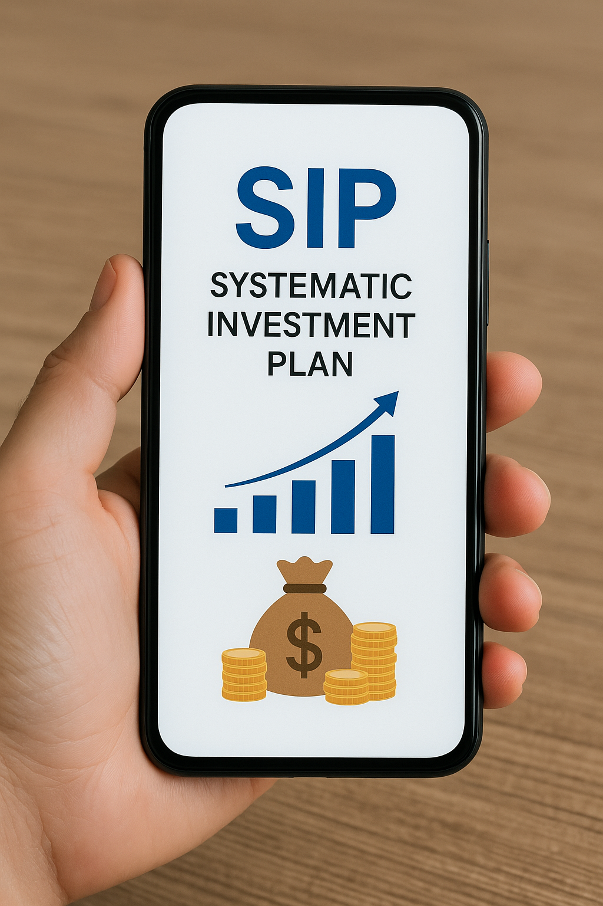

Start your journey toward long-term financial growth with SIPs crafted by experts at Ongole Bulls Invest.
GET STARTEDInvesting can often feel complex and overwhelming. A Systematic Investment Plan (SIP) simplifies this process, enabling you to invest small, regular amounts in mutual funds—creating long-term wealth through discipline, consistency, and the power of compounding.
At Ongole Bulls Invest, we specialize in crafting personalized SIP strategies tailored to your financial goals. Whether you’re just starting or are an experienced investor, our goal is to help you build a secure financial future with ease and confidence.
A SIP allows you to invest a fixed amount at regular intervals—typically monthly or quarterly—into mutual funds. Unlike lump sum investing, SIPs benefit from rupee cost averaging, where you buy more units when prices are low and fewer when prices are high, reducing overall market risk.
SIPs are ideal for individuals looking to:
No need to time the market
Builds a habit of saving regularly

Reduces the risk of market timing
Buys more when prices are low

Perfect for long-term goals like retirement
The longer you invest, the greater your returns
Start from as little as ₹500/month
Adjust your contribution as your income grows

Access to equity, debt, hybrid funds
Better financial stability through balanced portfolios

Need help getting started? Call us now for a free consultation.
Prefer email? Reach out for a personalized SIP strategy.
Explore mutual fund options at OngoleBullsInvest.com
A SIP is a method of investing fixed amounts at regular intervals in mutual funds to accumulate wealth over time.
Through rupee cost averaging, SIPs reduce the risk of market volatility by spreading investments over time.
Yes, most mutual funds allow you to begin SIPs with just ₹500/month.
For volatile markets and long-term goals, SIPs are often better as they manage risks more effectively.
Absolutely. SIPs are flexible—you can increase, pause, or stop anytime.
Yes, SIPs in ELSS (Equity Linked Savings Schemes) are eligible for tax deductions under Section 80C.
You can invest in multiple SIPs across different mutual fund schemes for better diversification.
Yes, thanks to compounding and disciplined investing, SIPs are a powerful tool for building wealth.
No, SIPs can be started without a Demat account—just a bank account and KYC compliance.
Simply contact us, and our advisors will guide you through selecting the right SIP plan for your needs.